Quick Guide: Cracking the Code to Getting Things Done!
Hey there! Studying can feel like climbing a mountain sometimes, but you do not have to do it all at once. Here is a simple game plan to help you beat distractions, stay encouraged, and win your day.

1. The Pomodoro Method (The "Sprint & Rest" Trick)
When a big task feels overwhelming, break it into tiny, bite-sized pieces of time.
- Step 1: Pick one thing to work on (just one).
- Step 2: Set a timer for 25 minutes and focus only on that task.
- Step 3: When the timer goes off, stop and take a 5-minute break to stretch, grab a snack, or walk around.
- Step 4: Repeat. After doing this 4 times, take a longer 20-minute break.

Word of Encouragement: "Commit to the Lord whatever you do, and he will establish your plans." — Proverbs 16:3
2. Defeating Distractions
Distractions happen to everyone. The secret is not being perfect. It is making a plan to protect your focus.
- Clear the Desk: Keep only what you need for one task in front of you.
- Silence the Phone: Put your phone on Do Not Disturb and place it across the room.
- Noise Control: If noises bother you, try headphones with instrumentals or white noise.

3. Small Wins = Big Victories
Do not worry about finishing the whole project today. Focus on winning the next 15 minutes.
- Writing one sentence is a win.
- Reading one page is a win.
- Cleaning off your desk is a win.

Celebrate these small steps because they build the momentum you need to keep going.
Word of Encouragement: "Do not despise these small beginnings, for the Lord rejoices to see the work begin..." — Zechariah 4:10
4. Overcoming Discouragement (When It Feels Too Hard)
If you get stuck, confused, or feel like giving up, take a deep breath. Mistakes and slow days do not mean you are failing. They mean you are learning.
- Change your self-talk: Instead of "I cannot do this," try "This is tough, but I can figure it out step-by-step."
- Ask for backup: There is no shame in asking a teacher, parent, or friend for help.

Extra Tools & Resources
- TomatoTimer: A simple, free online timer built for the Pomodoro method.
- Focusmate: A tool to find virtual study buddies for accountability.
- Forest App: A fun app where you grow a virtual tree by staying off your phone and focusing.
Focus Inspiration Wall
Use these visuals as quick reset cues: breathe, refocus, and return to your next small win.
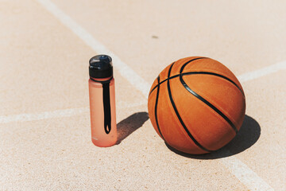
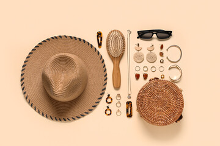
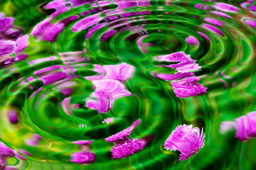
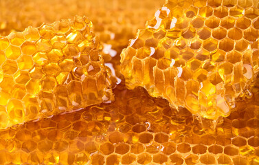
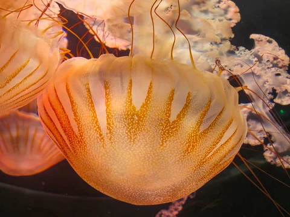
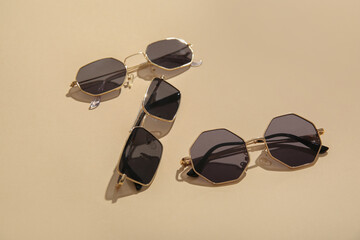
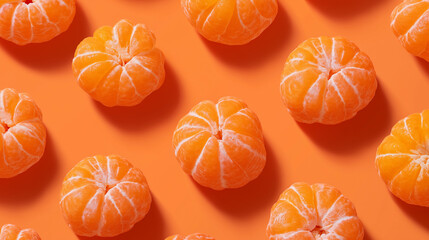
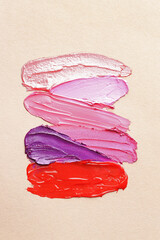
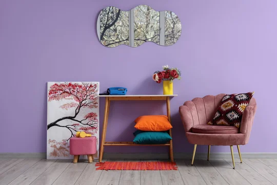
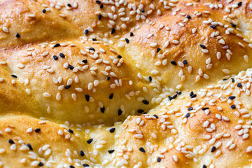
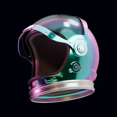
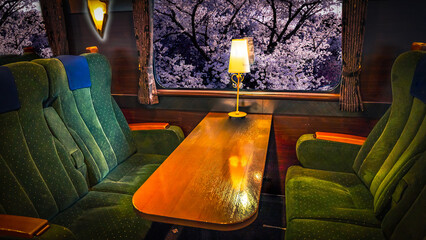
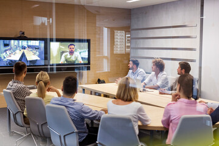
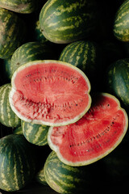